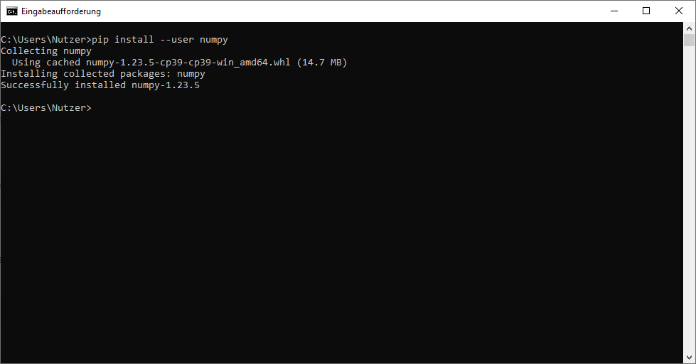
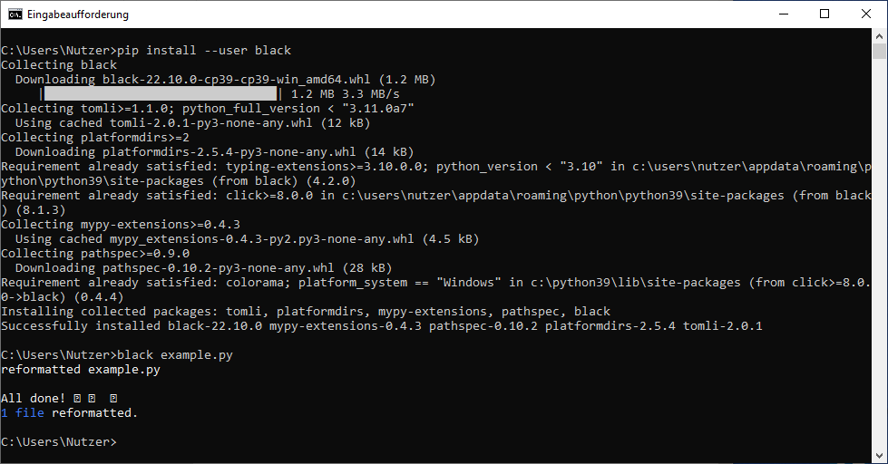

Chapter 8. Modules and packages
Contents
Chapter 8. Modules and packages#
Modules#
When writing large and complex software projects it’s usually a terrible idea to put everything into a single file as that file will quickly become large and unmaintainable. Therefore different functionalities are often split into different files whose code is then made available to other files.
Let’s create a file greeting.py which contains two functions and a class.
def get_full_name(first_name, last_name):
return f"{first_name} {last_name}"
def get_greeting(greet_message, full_name):
return f"{greet_message}, {full_name}"
class Greeter:
def __init__(self, greet_message):
self.greet_message = greet_message
def get_greeting(self, full_name):
return get_greeting(self.greet_message, full_name)
We can use the import statement to make code from greeting.py available to the REPL or another file.
For example if you open a REPL in the same directory as greeting.py, you can import greeting as following:
import greeting
greeting
<module 'greeting' from '/home/runner/work/the-python-minibook/the-python-minibook/src/8-modules-and-packages/greeting.py'>
As you can see, greeting is a module. This module now allows us to access the functions and classes that we defined in greeting.py:
full_name = greeting.get_full_name("John", "Doe")
full_name
'John Doe'
my_greeting = greeting.get_greeting("Welcome", full_name)
my_greeting
'Welcome, John Doe'
greeter = greeting.Greeter("Welcome")
greeter.get_greeting("John Doe")
'Welcome, John Doe'
Be careful not to shadow the module name:
greeting = greeting.get_greeting(full_name)
---------------------------------------------------------------------------
TypeError Traceback (most recent call last)
Cell In[9], line 1
----> 1 greeting = greeting.get_greeting(full_name)
TypeError: get_greeting() missing 1 required positional argument: 'full_name'
greeting
<module 'greeting' from '/home/runner/work/the-python-minibook/the-python-minibook/src/8-modules-and-packages/greeting.py'>
greeting.get_greeting(full_name)
---------------------------------------------------------------------------
TypeError Traceback (most recent call last)
Cell In[11], line 1
----> 1 greeting.get_greeting(full_name)
TypeError: get_greeting() missing 1 required positional argument: 'full_name'
Uh-oh! This happens because greeting is now a string containing the greeting instead of the module greeting:
greeting
<module 'greeting' from '/home/runner/work/the-python-minibook/the-python-minibook/src/8-modules-and-packages/greeting.py'>
You probably noticed that if we want to use a function from greeting we have to prefix the function with the module name. Sometimes this is desirable, but in certain cases we want to avoid to need for writing this prefix.
We can do accomplish this by using the from ... import ... statement:
from greeting import get_greeting
get_greeting("John Doe")
---------------------------------------------------------------------------
TypeError Traceback (most recent call last)
Cell In[14], line 1
----> 1 get_greeting("John Doe")
TypeError: get_greeting() missing 1 required positional argument: 'full_name'
We can also assign an alias (i.e. a different name) to a module or a function using the as statement:
import greeting as g
g.get_greeting("Welcome", "John Doe")
'Welcome, John Doe'
from greeting import get_greeting as gg
gg("Welcome", "John Doe")
'Welcome, John Doe'
Built-in modules#
There is a number of important built-in modules that Python ships with. We will not go over them all (this would require multiple books much larger than this one). However we will quickly take a brief look at some of them.
The math module provides various important mathematical functions. Here is a very small selection of them:
import math
math.floor(3.4)
3
math.ceil(3.4)
4
math.log(42)
3.7376696182833684
math.sqrt(4)
2.0
The math module also contains important constants like pi and e:
math.pi
3.141592653589793
math.e
2.718281828459045
The random module provides facilities for randomness like generation of random numbers, selection of random elements etc:
import random
random.random()
0.6688676660058911
random.randint(2, 6)
6
random.choice(["first element", "second element", "third element"])
'third element'
The datetime module provides facilities regarding the use of date and time:
import datetime
current_datetime = datetime.datetime.now()
current_datetime
datetime.datetime(2022, 12, 4, 17, 2, 8, 247760)
current_datetime.second
8
current_datetime.minute
2
current_datetime.hour
17
current_datetime.day
4
current_datetime.month
12
current_datetime.year
2022
There are a lot of modules in Python. Check out the Python documentation for more information.
Third-party packages#
We add third-party packages using the package manager pip. If you followed the installation instructions in chapter 1, pip should already be installed on your machine.
This package manager lets us install packages using the pip install command. For example we can install the third-party package numpy for numerical computations using pip install --user numpy:

Now that we installed the package we can import modules from that package:
import numpy as np
arr = np.array([0.0, 0.5, 1.0, 1.5, 2.0])
arr
array([0. , 0.5, 1. , 1.5, 2. ])
There are many useful third-party packages. For example the matplotlib package provides facilities for plotting. Install the package with pip install --user matplotlib.
Let’s import matplotlib.pyplot and assign the plt alias to it:
import matplotlib.pyplot as plt
plt.plot([0, 1, 4, 9, 16])
[<matplotlib.lines.Line2D at 0x7f1f79545af0>]
One particularly relevant package is black which is commonly used to automatically format Python code.
Create a file example.py with the following content:
print ( 'hello, world' )
Now install black with pip install --user black and run black example.py in the directory containing the Python file:

If you open the file example.py, you can see that its content has been reformatted according to the Black style guide which is a style guide compatible with PEP8:
print("hello, world")
It’s common practice to format all Python scripts with black when working on large software projects. This is because formatting all files in the same style results in a higher readability of the code.